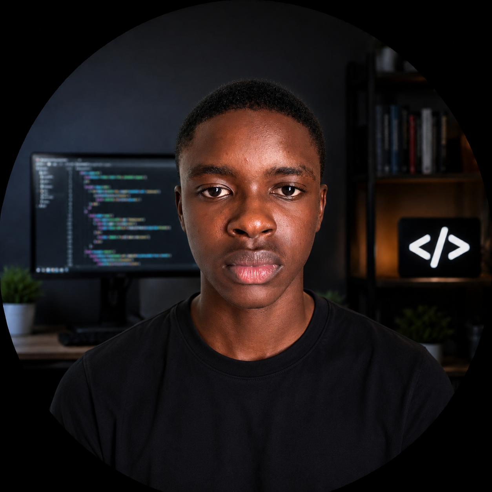
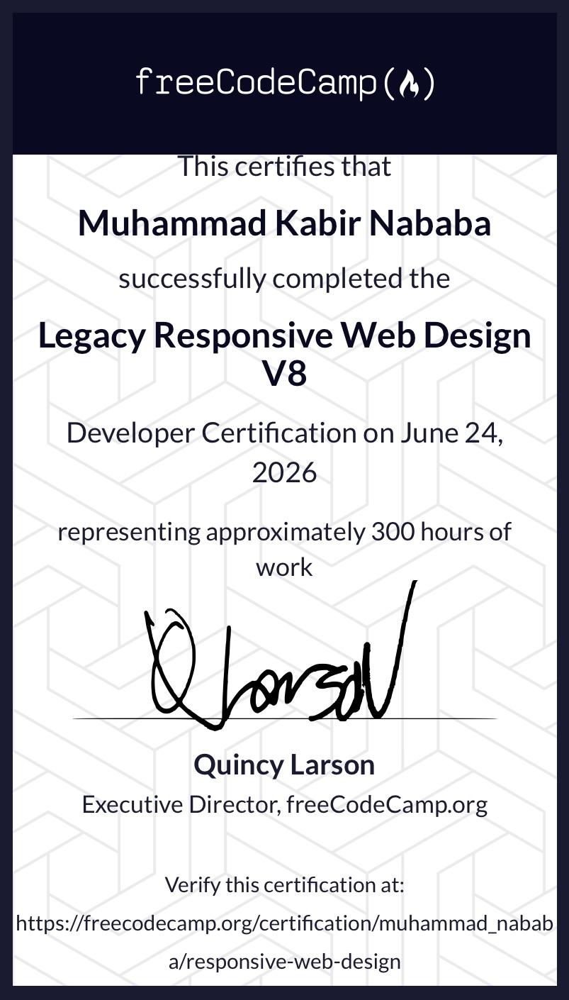

Welcome to my personal portfolio built with HTML and CSS.
I am currently learning web development through FreeCodeCamp.
My name is Muhammad, and I am currently learning Software Engineering.
I started my journey in web development through FreeCodeCamp, where I am learning HTML and CSS step by step.
At the beginning, coding felt difficult, but as I continue practicing, I am getting more comfortable building simple websites.
My goal is to become a skilled software engineer and build real-world projects that can solve problems and help people.
Right now, I am focusing on improving my foundation in HTML and CSS before moving to more advanced technologies.
I started my journey into software engineering through FreeCodeCamp. At first, I didn't really understand how websites were built, but I was curious about how things work be[...[...]
I began learning HTML and CSS step by step. HTML helped me understand how to structure a webpage, while CSS showed me how to style and make it look better.
At the beginning, I struggled with small things like linking pages and understanding tags, but with practice and repetition, I started getting better.
Building projects like this portfolio is helping me understand real web development instead of just theory.
Right now, my focus is on strengthening my foundation in HTML and CSS before moving on to more advanced topics like JavaScript and backend development.
My goal is to become a skilled software engineer who can build useful and real-world applications.
I am currently learning web development and building my skills through practical projects. I enjoy creating websites and continuously improving my knowledge of technology.Web Development
I have experience working with HTML and CSS to create basic web pages, structure content, and design user-friendly layouts.
I am currently expanding my knowledge of CSS and exploring modern web development practices to build better and more responsive websites.
My next goal is to learn cloud computing and understand how applications and websites are deployed, managed, and scaled in cloud environments.
I am a dedicated learner with strong problem-solving skills, attention to detail, and a willingness to continuously improve and adapt to new technologies.
Below are the projects I have built while learning web development on FreeCodeCamp.
This was my first project. It introduced me to basic HTML elements like headings, paragraphs, images, links, lists, and forms.
I built a survey form using HTML form elements such as input fields, radio buttons, checkboxes, and dropdown menus.
This project focused on structuring content properly using HTML.
I created a bookstore page that displays books in a structured layout.
This project helped me understand how inventory systems are structured.
This CSS-focused project taught me about layout, spacing, and visual design.
I have successfully completed the Legacy Responsive Web Design V8 Developer Certification from freeCodeCamp, representing approximately 300 hours of work.
Verify CertificateI have clear goals that guide my learning and keep me motivated on my journey into software engineering.
My journey into web development has been both challenging and rewarding. Through FreeCodeCamp and personal practice, I have learned the fundamentals of HTML and CSS.
At the beginning, I found it difficult to understand how webpages were structured and connected. However, by building projects and practicing regularly, I became more comfo[...]
Some of the projects I completed include a Cat Photo App, Survey Form, Recipe Page, Bookstore Page, Book Inventory App, and Product Landing Page. Each project taught me new[...]
One important lesson I learned is that mistakes are a normal part of the learning process. Every challenge I faced helped me improve my problem-solving skills and confidenc[...]
One of the biggest challenges was understanding how CSS styling works together with HTML structure. Things like the box model, margins, padding, and how elements are positi[...]
I enjoyed seeing my work come to life in the browser. Every time I built a new project and could see it displayed as a real webpage, it motivated me to keep going and learn[...]
Going forward, I plan to take more notes as I learn, build more projects from scratch without following tutorials, and spend more time reading documentation to deepen my un[...]
Beyond web development, I have a strong passion for emerging technologies that are shaping the future. These are the fields that excite me the most and motivate me to keep [...]
I am deeply interested in cloud computing and how it powers modern applications and services. The idea of being able to deploy, manage, and scale applications from anywhere[...]
Artificial Intelligence is one of the most exciting fields in technology today. I am interested in how AI systems are built, how they learn from data, and how they are used[...]
Machine Learning is a branch of AI that I find particularly interesting. I am fascinated by how machines can be trained to recognize patterns, make decisions, and improve o[...]
I believe that the future belongs to those who are willing to continuously learn and adapt. I am committed to expanding my knowledge across all these fields — from web de[...]
My goal is to one day combine my web development skills with cloud and AI technologies to build applications that make a real difference in people's lives.
I would love to hear from you. Whether you have a question, an opportunity, or just want to say hello, feel free to reach out.